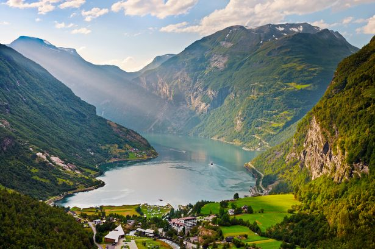

"Places I Would Like To Visit"
Iceland: Hrafna-Floki Vilgerdarson sailed here and is known to be one of the first vikings to discover Iceland

Monster Island: This is the home of Godzilla, and his amazing friends: Rodan, Angurius, and King Caesar

Egypt: Setting to the story of Exodus, and home to my beloved Aya of Alexandria

Africa: I bless the rains down in Africa. Gonna take some time to do the things we never had

Loch Ness: In Scottish folklore, the Loch Ness Monster or Nessie is a creature said to inhabit Loch Ness in the Scottish Highlands.

Norway: Home to Ragnar Lothbrok, one of the most famopus viking to ever live